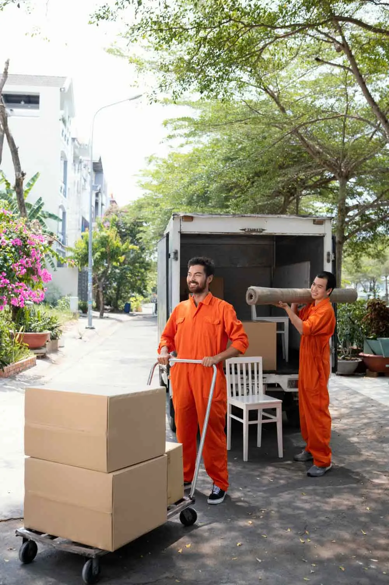
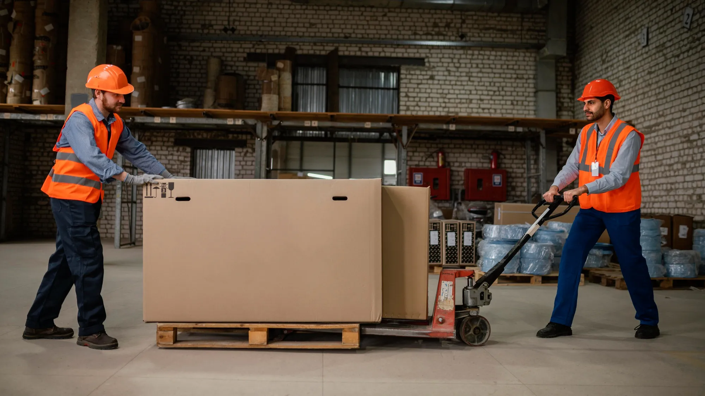

Packing for Household Essentials
Prepare furniture, appliances, kitchenware, clothing, and personal belongings for transportation with suitable packers and movers in Suratgarh.
Saksham Packers and Movers in Suratgarh offers home shifting, office relocation, and goods transportation services with suitable packing and careful handling of your belongings.
Prepare furniture, appliances, kitchenware, clothing, and personal belongings for transportation with suitable packers and movers in Suratgarh.
Arrange home shifting services in Suratgarh based on the number of items, distance between addresses, and services required.
Organize the movement of packed belongings with planned loading, transportation, and unloading arrangements for your new home.
Certified Goverment Authorised
Shifting homes or relocating a business requires different arrangements depending on the items being transported and the distance involved. Saksham Packers and Movers offers relocation options in Suratgarh for households, professionals, and commercial customers looking to coordinate their move.
A household move may involve bulky furniture and delicate possessions, while a commercial relocation can require organized transportation for equipment and inventory. Saksham Packers and Movers offers different moving options to discuss according to the nature of your relocation.

Arrange the transportation of beds, sofas, wardrobes, refrigerators, washing machines, kitchen essentials, and personal belongings.
Plan the movement of desks, computers, printers, files, and other office equipment with suitable office shifting services in Suratgarh.
Discuss protective packing for glassware, electronics, decorative pieces, and delicate household items.
Enquire about moving a car or two-wheeler from Suratgarh to your chosen destination, depending on route and service availability.

Coordinate the transfer of packed cartons, furniture, and appliances between your existing property and the delivery address.
Explore arrangements for moving packaged goods, business supplies, and eligible commercial consignments.
The packers and movers charges in Suratgarh, Rajasthan depend on the distance between locations,
quantity of goods, packing materials, vehicle requirements, property access, and additional services
requested.
To request a quotation from Saksham Packers and Movers , provide your pickup and delivery locations,
approximate inventory, moving date, and required services. Reviewing the estimate and its included
services can help you prepare a relocation budget that matches your needs.
| Move Type | Within Rajasthan | Intercity (Starting From) |
|---|---|---|
| 1 BHK House | ₹3,500 - ₹6,000 | ₹8,000 - ₹14,000 |
| 2 BHK House | ₹5,500 - ₹9,000 | ₹12,000 - ₹20,000 |
| 3 BHK House | ₹7,000 - ₹12,000 | ₹15,000 - ₹28,000 |
| 4 BHK / Villa | ₹10,000 - ₹16,000 | ₹20,000 - ₹35,000+ |
| Office Shifting | ₹6,000 - ₹15,000+ | ₹15,000 - ₹40,000+ |
| Bike Transport | ₹1,200 - ₹3,000 | ₹2,500 - ₹6,000 |
| Car Transport | ₹4,500 - ₹9,000 | ₹6,500 - ₹15,000 |
Find quick answers to common questions about our packing, moving and relocation services in Suratgarh.
Charges for Office shifting services in Suratgarh depend on the volume of items, distance, and service requirements. We provide cost-effective and transparent pricing with no hidden charges. Contact us now for a personalized quote for your shifting needs.
We provide a full range of services to meet your needs. Our expertise includes household moving, office relocations, vehicle transport, and commercial shifting. We ensure peace of mind with door-to-door pickup and delivery, secure packing, safe loading, and timely delivery, all handled by our skilled and professional team.
Do we offer door-to-door service for home shifting in Suratgarh? At Saksham Packers and Movers, we provide complete relocation services including local and intercity home shifting with door-to-door pickup and delivery, so yes, door-to-door service is available for home shifting in Suratgarh.
Absolutely Yes! We offer flexible shifting services in Suratgarh on weekends and holidays. This allows you to move without disturbing your daily routine or work schedule.